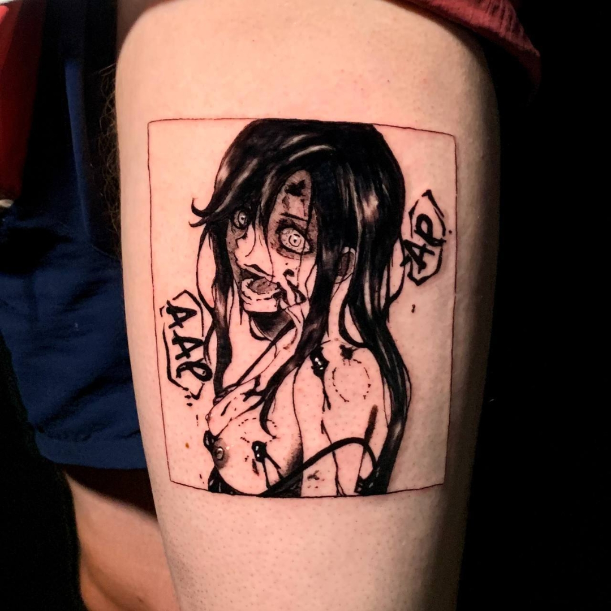

نمونه کارها

سبک پچ و استیکر (Patch & Sticker Tattoo) یک سبک مدرن و فانتزی تتو است که شبیه برچسب یا پچهای لباس روی پوست به نظر میرسد، اما باید توجه داشت که واقعی نیست و دوخته یا چسبانده نشده است. در این سبک طرحها معمولاً با خطوط مشخص و رنگهای پررنگ اجرا میشوند و ظاهرشان دو بعدی و کارتونی است، گویی روی پوست چسبانده شدهاند. استفاده از رنگهای روشن و شاد، خطوط واضح و مرزهای مشخص باعث میشود طرح کاملاً شبیه یک پچ واقعی به نظر برسد. طرحها اغلب کوچک و فانتزی هستند و میتوانند شامل شخصیتها، نمادها، اشیای کارتونی یا عناصر گرافیکی باشند. این سبک برای کسانی که دنبال تتوهای جذاب، سرگرمکننده و خلاقانه هستند مناسب است و به دلیل اندازه کوچک و سادگی طرح، زمان اجرا کوتاه و درد معمولاً متوسط تا کم است.
سبک داتورک یکی از خاصترین و چشمگیرترین سبکهای تتو است که در آن طرحها نه با خطوط پیوسته، بلکه با نقطهگذاریهای متوالی شکل میگیرند. در این روش، هنرمند بهجای کشیدن خط یا سایه مستقیم، با قرار دادن نقطههای ریز و درشت در کنار هم، حجم، سایهروشن و بافت ایجاد میکند. این سبک معمولاً برای طراحیهای ماندالا، هندسی، مذهبی، گل و گیاه، و حتی پرترههای خاص استفاده میشود. دقت و حوصلهی تتوآرتیست در این روش اهمیت زیادی دارد، چون زیبایی نهایی طرح به هماهنگی و تراکم نقطهها بستگی دارد. یکی از جذابیتهای بزرگ داتورک این است که به تتو عمق و حالت سهبعدی میدهد، بدون آنکه از رنگهای متنوع یا سایهزنیهای پیچیده استفاده شود. به همین دلیل، اغلب آثار این سبک سیاه و خاکستری هستند و جلوهای مینیمال، تمیز و در عین حال بسیار هنری دارند. از نظر درد، چون سوزن بهصورت مداوم و تکراری روی پوست ضربه میزند، تتوی داتورک میتواند برای برخی افراد کمی دردناکتر از سبکهای سادهتر باشد. با این حال میزان درد کاملاً به محل تتو و آستانه تحمل فرد بستگی دارد. از نظر زمان اجرا هم داتورک معمولاً طولانیتر است، چون ایجاد حجم و سایه با نقطهگذاری زمان بیشتری نسبت به کشیدن خطوط یا سایهزنی عادی میبرد. بنابراین طرحهای بزرگ در این سبک ممکن است نیاز به چند جلسه تتو داشته باشند.
سبک آبرنگی یا یکی از سبکهای مدرن تتو است که در آن طرح شبیه نقاشی آبرنگ روی کاغذ به نظر میرسد. در این سبک خبری از خطوط تیز و پررنگ نیست، بلکه رنگها به صورت محو، شفاف و پخششده روی پوست اجرا میشوند. مرز رنگها معمولاً مشخص نیست و همین باعث میشود طرح جلوهای لطیف، هنری و آزاد داشته باشد. رنگهای روشن مثل آبی، صورتی، بنفش، سبز و زرد در این سبک بسیار پرکاربرد هستند و اغلب با هم ترکیب میشوند تا حس پاشیدن یا پخش شدن رنگ را منتقل کنند. این نوع تتو میتواند بدون خط مشکی یا همراه با کانتور ظریف اجرا شود، اما در هر صورت هویت اصلی آن بر پایه رنگ و ترکیبهای هنری است. از پر، پرنده، گل، پروانه و حتی طرحهای انتزاعی گرفته تا سیارات و مناظر، همگی در سبک آبرنگی زیبا و چشمگیر میشوند. از نظر درد، باید گفت که چون برای رسیدن به این افکت نیاز است چندین لایه رنگ روی پوست کار شود، میزان درد معمولاً متوسط رو به بالاست. در نواحی حساس یا پوستهای نازک مثل مچ، ساعد داخلی یا پشت گوش درد بیشتر احساس میشود. همچنین اگر طرح بزرگ باشد، دستگاه مدت زمان بیشتری روی یک نقطه حرکت میکند و این موضوع باعث التهاب و سوزش بالاتر خواهد شد. زمان اجرا نیز بسته به اندازه و جزئیات طرح تغییر میکند. برای یک طرح کوچک مثل یک گل پنج سانتی، معمولاً بین یک تا دو ساعت زمان نیاز است. طرحهای متوسط مثل یک بخش کامل ساعد یا بازو سه تا پنج ساعت طول میکشد و اگر طرح خیلی بزرگ یا فولکالر باشد، حتی ممکن است به چند جلسه تقسیم شود
.سبک رئال یا واقعگرایانه در تتو یکی از سختترین و پرجزئیاتترین سبکهاست. در این سبک، طرح روی پوست دقیقاً شبیه یک عکس یا تصویر واقعی اجرا میشود. هنرمند با استفاده از تکنیکهای سایهزنی، حجمدهی و بازی با نور و کنتراست، تصویری زنده و طبیعی خلق میکند. رئالیسم میتواند هم به صورت سیاه و خاکستری اجرا شود و هم به شکل رنگی. در نوع سیاه و خاکستری، پرترهها و اجسام با ظرافت و عمق بیشتری دیده میشوند. در نوع رنگی، نتیجه بیشتر شبیه نقاشی رنگ روغن یا یک تصویر چاپشده است. این سبک بیشتر برای چهرهها، حیوانات، مناظر و حتی اشیای خاص استفاده میشود. به دلیل دقت بالا و نیاز به جزئیات ریز، اجرای آن بسیار زمانبر است. یک پرتره کوچک ممکن است چند ساعت طول بکشد و یک طرح بزرگ حتی به چند جلسه نیاز داشته باشد. از نظر درد، چون هنرمند باید لایههای متعددی از سایه و رنگ را روی پوست پیاده کند، شدت درد معمولاً متوسط تا زیاد است. بهویژه در نواحی حساس یا طرحهای پرجزئیات، فرد باید آمادگی بیشتری برای تحمل درد و زمان طولانی داشته باشد
سبک مینیمال یکی از سادهترین و در عین حال شیکترین سبکهای تتو است که بر اساس خطوط تمیز، شکلهای ساده و جزئیات حداقلی طراحی میشود. هدف این سبک ایجاد طرحی کوچک و گویا با کمترین عناصر ممکن است. برخلاف سبکهایی مثل رئال یا آبرنگی که نیاز به سایهزنی یا رنگهای متعدد دارند، مینیمال بیشتر روی فرم، نماد و مفهوم تمرکز میکند و اغلب فقط با خطوط سیاه یا گاهی یک رنگ محدود اجرا میشود. طرحهای مینیمال میتوانند شامل نمادها، اشکال هندسی، حروف، علائم کوچک یا عناصر طبیعی ساده مثل ستاره، ماه، گل یا پر باشند. این سبک به دلیل سادگی و اندازه کوچک، معمولاً کمترین درد را ایجاد میکند و اجرای آن سریع است. یک تتوی کوچک مینیمال معمولاً بین پانزده تا چهل و پنج دقیقه طول میکشد و حتی در نواحی حساس بدن هم معمولاً درد زیادی ایجاد نمیشود. بهخاطر سادگی و اندازه کوچک طرحها، مراقبت بعد از تتوی مینیمال هم آسانتر است و احتمال اشتباه یا نیاز به اصلاح مجدد کمتر است. این سبک برای کسانی که دنبال تتوی ظریف، پنهان یا با مفهوم شخصی هستند بسیار مناسب است و میتوان آن را تقریباً روی هر نقطهای از بدن اجرا کرد.
سبک میکرورئال شاخهای از سبک رئال است که همه جزئیات و ویژگیهای واقعگرایانه را در ابعاد بسیار کوچک و جمعوجور ارائه میدهد. هدف آن خلق تصویری دقیق و طبیعی روی پوست است، اما اندازه طرح معمولاً کوچک است و محدود به بخشهای کوچک بدن میشود. برخلاف رئال سنتی که ممکن است یک پرتره کامل یا منظره بزرگ باشد، میکرورئال روی جزئیات کوچک مثل چهرهای کوچک، حیوانات کوچک، گل یا اشیای شخصی کار میکند و در عین حال حس واقعی بودن تصویر حفظ میشود. این سبک معمولاً با سیاه و خاکستری اجرا میشود، اما گاهی نسخه رنگی هم دارد. به دلیل اندازه کوچک طرح، اجرای آن نیاز به دقت بسیار بالا و دست هنرمند فوقالعاده ماهر دارد تا جزئیات در مقیاس کوچک واضح و قابل تشخیص بمانند. از نظر درد، بسته به ناحیه بدن، معمولاً متوسط است، اما زمان اجرای هر طرح کوتاهتر از رئال بزرگ است و معمولاً بین سی دقیقه تا دو ساعت طول میکشد.
سبک ژئومتریک یکی از سبکهای مدرن و پرطرفدار تتو است که بر اساس اشکال هندسی، خطوط دقیق و تقارن طراحی میشود. در این سبک از مثلث، دایره، مربع، خطوط موازی و الگوهای تکرارشونده برای ایجاد طرحهای زیبا و متقارن استفاده میشود. گاهی طرحها ساده و مینیمال هستند و گاهی با جزئیات پیچیده و حجمدهی ترکیب میشوند تا جلوهای سهبعدی پیدا کنند. این سبک معمولاً با رنگ مشکی یا ترکیب مشکی و سایههای خاکستری اجرا میشود، اما نسخههای رنگی هم دیده میشوند. سبک جیومتریک به دلیل دقت بالا و نیاز به خطوط کاملاً صاف و متقارن، اجرای آن به مهارت هنرمند وابسته است. از نظر درد، شدت آن معمولاً متوسط است و زمان اجرا به اندازه و پیچیدگی طرح بستگی دارد، یک طرح کوچک ممکن است کمتر از یک ساعت و طرحهای بزرگتر چندین ساعت طول بکشد. جیومتریک اغلب با سبکهای دیگر مثل بلکورک، مینیمال یا حتی رئال ترکیب میشود تا طرحهایی خلاقانه و هنری ایجاد کند و برای کسانی که دنبال تتویی مدرن، دقیق و سمبلیک هستند، بسیار مناسب است.
سبک بلکورک یکی از سبکهای برجسته و گرافیکی تتو است که همه یا بخش عمده طرح با رنگ مشکی خالص اجرا میشود. در این سبک از خطوط ضخیم، پر کردن کامل فضاها با مشکی و ایجاد الگوهای هندسی، انتزاعی یا سمبلیک استفاده میشود. طرحها میتوانند شامل الگوهای تکرارشونده، نقشهای قبیلهای، اشکال هندسی یا ترکیب با نمادهای مدرن باشند و گاهی حتی کل یک بخش بدن به صورت کامل با مشکی پر میشود. این سبک به دلیل استفاده گسترده از رنگ مشکی و حجمدهی با سایه و خطوط، جلوهای قدرتمند و چشمگیر دارد. از نظر درد، چون بخش زیادی از پوست باید با رنگ مشکی پر شود، معمولاً متوسط تا زیاد است و زمان اجرا به وسعت و پیچیدگی طرح بستگی دارد؛ طرحهای کوچک ممکن است حدود یک تا دو ساعت و طرحهای بزرگ چند جلسه طول بکشند. بلکورک به خاطر سادگی رنگ و قدرت بصری بالا، با سبکهای دیگر مثل جیومتریک، مینیمال یا حتی نئوترادیشنال ترکیب میشود تا طرحهایی مدرن و هنری ایجاد کند و برای کسانی که دنبال تتویی چشمگیر، گرافیکی و با مفهوم قوی هستند، بسیار مناسب است.
سبک ترایبال یا ترمینال یکی از قدیمیترین و پایهایترین سبکهای تتو است که ریشه در فرهنگها و قبایل باستانی سراسر جهان دارد. در این سبک از الگوهای سیاه و پررنگ، خطوط خمیده، زاویهدار و تکرارشونده استفاده میشود و هر طرح معمولاً معنا و سمبل خاصی برای قبیله یا فرهنگ خودش داشته است. ترایبالها اغلب نماد قدرت، شجاعت، محافظت، هویت قبیلهای یا مراسم خاص بودهاند و هنوز هم در دنیای مدرن به عنوان یک سبک گرافیکی و معنادار محبوب هستند. این سبک معمولاً با رنگ مشکی خالص اجرا میشود و خبری از رنگهای روشن یا سایهزنی پیچیده نیست. طرحها میتوانند کوچک و ساده باشند یا بزرگ و تمامقسمتی، مثلاً بازو، ساعد، قفسه سینه یا پشت بدن را پوشش دهند. از نظر درد، بسته به وسعت طرح و ناحیه بدن، معمولاً متوسط تا زیاد است و زمان اجرا به اندازه طرح بستگی دارد؛ طرحهای کوچک ممکن است کمتر از یک ساعت و طرحهای بزرگ چندین جلسه طول بکشند. ترایبال به دلیل ظاهر گرافیکی و معنای سمبلیک، اغلب با سبکهای دیگر مثل بلکورک یا جیومتریک ترکیب میشود و برای کسانی که دنبال تتوهایی قدرتمند، کلاسیک و معنادار هستند، بسیار مناسب است.
سبک اولد اسکول (Old School) که به آن ترادیشنال کلاسیک هم گفته میشود، یکی از قدیمیترین و پایهایترین سبکهای تتو است و ریشه آن به دهههای اول قرن بیستم در آمریکا برمیگردد. این سبک به خاطر خطوط ضخیم و مشخص، رنگهای محدود و زنده و طراحی ساده و قابل فهم شناخته میشود. طرحها معمولاً با خطوط سیاه ضخیم مرز بندی میشوند و رنگهای اصلی و پررنگ مثل قرمز، سبز، آبی و زرد در آنها به کار میرود. سایهزنی در این سبک کم یا تقریباً بدون سایه است و تمرکز بیشتر روی سادگی و وضوح طرح است. طرحهای متداول شامل گل، قلب، عقاب، دلقک، کشتی و نمادهای دریایی هستند و به دلیل جلوه کلاسیک و ماندگاری بالای رنگها، هنوز هم بین تتوکاران و مشتریان محبوب هستند. از نظر درد و زمان اجرا، بسته به سایز طرح، معمولاً متوسط و نسبتاً سریع است و برای طرحهای کوچک یک ساعت یا کمتر طول میکشد و طرحهای بزرگتر ممکن است چند جلسه طول بکشد.
سبک نئوترایبال نسخه مدرن و بهروز سبک ترایبال است که ریشه آن به فرهنگها و قبایل باستانی بازمیگردد. در این سبک از الگوهای سیاه و پررنگ، خطوط خمیده و زاویهدار و طراحیهای تکرارشونده استفاده میشود، اما تفاوتش با ترایبال سنتی در این است که با تکنیکهای مدرن، جزئیات بیشتر و خلاقیت هنری اجرا میشود. طرحها میتوانند کوچک و ساده یا بزرگ و تمامقسمتی باشند و معمولاً معانی سمبلیک مثل قدرت، محافظت یا هویت فرهنگی دارند. این سبک به دلیل ظاهر گرافیکی و پررنگ، جلوهای قدرتمند دارد و اغلب با سبکهای دیگر مثل بلکورک یا جیومتریک ترکیب میشود. شدت درد و زمان اجرا بسته به اندازه و ناحیه بدن متغیر است؛ طرحهای کوچک ممکن است کمتر از یک ساعت و طرحهای بزرگ چندین جلسه طول بکشد.
سبک فاین آرت (Fine Art Tattoo) یکی از خلاقانهترین و هنریترین سبکهای تتو است که تمرکز آن روی خلق تتویی شبیه آثار هنری واقعی روی پوست است. برخلاف سبکهای کلاسیک یا سنتی، فاین آرت به دنبال بیان هنری، جزئیات ظریف و خلاقیت منحصر به فرد است و اغلب طرحها از آثار نقاشان کلاسیک یا مدرن الهام میگیرند. این سبک با جزئیات دقیق و پیچیده، سایهزنی ظریف و رنگبندی هنرمندانه شناخته میشود و میتواند هم به صورت رنگی و هم سیاه و سفید اجرا شود. طرحها معمولاً منحصر به فرد و سفارشی هستند و از قالبهای آماده استفاده نمیشود. فاین آرت میتواند با سبکهایی مثل رئال، آبرنگی یا مینیمال ترکیب شود تا جلوهای خلاقانه و مدرن ایجاد کند و برای کسانی که میخواهند تتویی شبیه یک اثر هنری واقعی روی پوستشان داشته باشند، بسیار مناسب است. به دلیل دقت بالا و جزئیات فراوان، اجرای آن معمولاً زمانبر است و نیازمند مهارت بالای هنرمند میباشد.
پارسا عزیزی.
شماره تماس: +989927991430
ایمیل: astroparsa979@gmail.com
من پارسام و میخوام هنرم رو با شما به اشتراک بزارم .